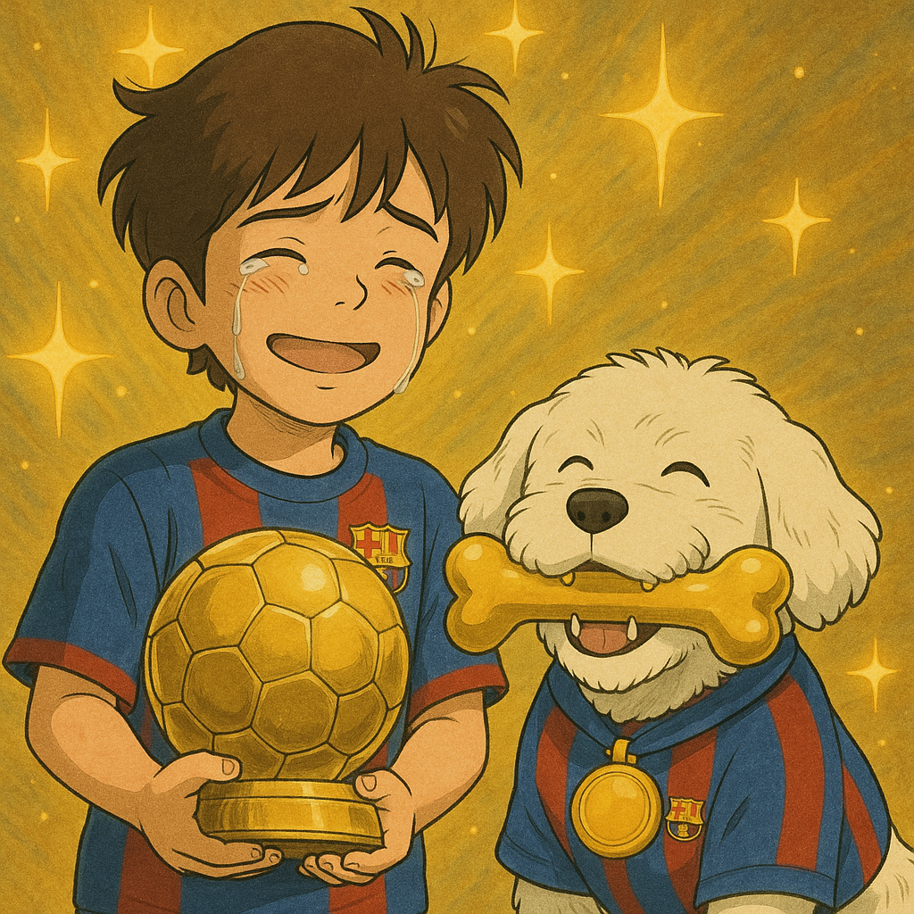

Era un diumenge especial. El Pau feia anys i, com a regal, el seu pare li havia aconseguit dues entrades per veure el Barça contra el Madrid al Camp Nou. No hi havia ningú més feliç que ell… i en Jackie, el seu gos fidel, que també duia una bufanda del Barça al coll.
El partit era intens. El marcador anava 2 a 2, i només quedaven cinc minuts. De sobte, un dels davanters del Barça es va lesionar. El públic va quedar en silenci. L’entrenador mirava desesperat a la banqueta… tots els jugadors estaven morts de por i no volien sortir...
Quan ja no sabia que fer, l'entrenador va fixar la vista en el Pau i en Jackie.
Vinga va baixeu vosaltres! que crec que ho fareu millor que els que tinc a la banqueta!
Sense pensar-s’ho dues vegades, el Pau i en Jackie van baixar corrent. Els van donar una samarreta del Barça a cada un (sí, fins i tot en Jackie en tenia una a mida canina) i van entrar al camp entre aplaudiments i cares de sorpresa.
El Madrid pressionava fort. Com que son una mica guarrus, van anar a tope a pel Pau i el Jackie. Els dos pobres van començar a rebre entrades épiques pero se'n anaven escapant com a autèntics ninjes
Passava el temps i el Madrid seguia apretant. El rellotge marcava 89 minuts. Però llavors, el Pau va fer una passada llarga cap a en Jackie, que amb una giravolta canina va despistar dos defenses. El Pau va córrer cap a l’àrea, va rebre la passada d’en Jackie i, amb una acrobàcia impossible, va xutar la pilota amb força.
La pilota va entrar per tot l’escaire. GOOOOOOL!!! El Camp Nou va esclatar d’eufòria. Els companys d’equip van aixecar el Pau i en Jackie com a herois.
L'arbitre va pitar el final de seguida! victoria brutal del Barça gracies al golarru del Pau!!!
L'entrenador va demanar al Pau i al Jackie que es quedessin a l'equip, pels pròxims partits, pero el Pau va dir que no, perqué havia quedat per jugar al Fornite.
Uns dies després del partit, en una cerimònia inoblidable, li van entregar al Pau la Pilota d’Or, i a en Jackie… un os d’or!
Des d’aquell dia, el Pau i en Jackie es van convertir en llegendes del futbol. Però, per a ells, el millor de tot havia estat viure aquella aventura junts.
THE END